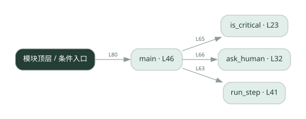

2-17 · 全课程第 37 节
人工确认节点
035.py
源码快照 eee091a9a2bd · 静态解析 · 2026-09-10
01 / 要完成的事
识别关键步骤，在真正执行前取得人工批准，拒绝时停止或跳过。
02 / 为什么要做
发信、改库等动作需要由人承担最终决策，不能只靠模型决定。
03 / 当前代码状态
is_critical 固定返回 False，ask_human 固定批准；main 先调用 run_step 再检查审批，而且没有拒绝后的中止分支。这里只打印模拟动作，但真正实现时必须先审批再执行。
主要展示本地计算、内存状态或模拟流程；是否写文件/启动子进程请看调用表。 本次只做静态解析，没有运行练习，也没有替你填写或修改原代码。
04 / 调用图
打开大图 ↗实线：源码中的直接调用；虚线：函数引用/注册、动态调用或按方法名推断的候选。L 是调用所在源码行号。箭头不表示执行顺序或每次必经；分支、循环、异步调度及框架内部调用需结合源码。灰色是外部/未解析目标，橙色是动态分发；省略 print、len 和常规容器操作以减少干扰。孤立函数可能尚未接入。

先从 main 及模块入口 出发，沿箭头找到本文件函数，再查看外部调用或动态分发。右侧调用清单保留所有静态调用点，能回到原文件逐行对照。
05 / 函数定位
| 函数 / 定义行 | 职责（源码注释） | 内部调用 |
|---|---|---|
is_criticalL23 | 判断这个步骤是不是「必须等人确认」的关键节点。 | 未发现显式函数调用（可能直接计算、读写状态或尚未实现） |
ask_humanL32 | 模拟停下来等人确认：从 HUMAN_REPLIES 弹出一个回答。 | 未发现显式函数调用（可能直接计算、读写状态或尚未实现） |
run_stepL41 | 模拟执行一个普通步骤（离线，不真调工具）。 | 未发现显式函数调用（可能直接计算、读写状态或尚未实现） |
mainL46 | 以源码函数体为准；下列调用展示其依赖。 | print, run_step, is_critical, ask_human |
这样做的优点
关键决策可以插入可见的人工关口。
代价与局限
模拟回复不等于真实审批；审批若放在执行后就无法阻止动作。
适用场景
学习关键节点识别、模拟审批与中止流程。
不宜直接照搬
照搬模拟批准代码直接执行外部副作用。
动手检验理解
给关键步骤返回 reject，确认 run_step 是否仍被调用。
有未实现位置时先预测，再补齐验证。能启动不等于逻辑正确。
查看全部 12 个静态调用 / 引用点
| 调用方 | 目标 | 源码行 | 类型 |
|---|---|---|---|
| main | print | 57 | 调用 |
| main | print | 58 | 调用 |
| main | print | 59 | 调用 |
| main | print | 63 | 调用 |
| main | run_step | 63 | 调用 |
| main | is_critical | 65 | 调用 |
| main | ask_human | 66 | 调用 |
| main | print | 67 | 调用 |
| main | print | 74 | 调用 |
| main | print | 75 | 调用 |
| main | print | 76 | 调用 |
| <模块入口> | main | 80 | 调用 |